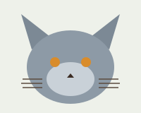
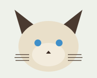
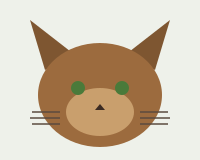
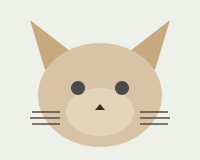
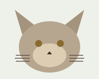
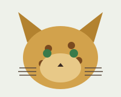

Породы кошек
Небольшая подборка распространённых пород — для курсовой задачи по вёрстке. Ниже один и тот же набор из шести пород показан тремя разными сетками Bootstrap, а в конце — обычный список с короткими фактами по каждой породе.
Чем отличаются породы
Разница между породами обычно сводится к трём вещам: длине и типу шерсти, форме головы и ушей и темпераменту. Британская короткошёрстная плотная и спокойная, мейн-кун крупнее большинства пород и линяет заметно сильнее, у сфинкса шерсти почти нет вовсе, поэтому ему нужнее тепло и уход за кожей.
Что нужно знать перед покупкой
- Срок жизни большинства пород — от 12 до 18 лет.
- Длинношёрстные породы (мейн-кун) нуждаются в регулярном вычёсывании.
- У сфинкса нет шерсти, но есть особенности терморегуляции и ухода за кожей.
- Шотландская вислоухая — результат мутации хряща, и у таких кошек встречаются проблемы с суставами, об этом стоит знать перед выбором котёнка.
Галерея 2×3
Две колонки, три ряда.

Британская короткошёрстная

Сиамская

Мейн-кун

Сфинкс

Шотландская вислоухая

Бенгальская
Галерея 3×2
Три колонки, два ряда.
Британская короткошёрстная
Сиамская
Мейн-кун
Сфинкс
Шотландская вислоухая
Бенгальская
Список пород
Шесть в один ряд на широком экране, и короткая справка по каждой.
Британская
Сиамская
Мейн-кун
Сфинкс
Шотландская
Бенгальская
| Порода | Шерсть | Особенность |
|---|---|---|
| Британская короткошёрстная | короткая, плотная | спокойный темперамент |
| Сиамская | короткая | поинт-окрас, узкая морда |
| Мейн-кун | длинная, полудлинная | одна из крупнейших домашних пород |
| Сфинкс | отсутствует | нуждается в уходе за кожей |
| Шотландская вислоухая | короткая | загнутые уши — следствие мутации хряща |
| Бенгальская | короткая, с рисунком | пятнистый окрас, происхождение от дикого предка |